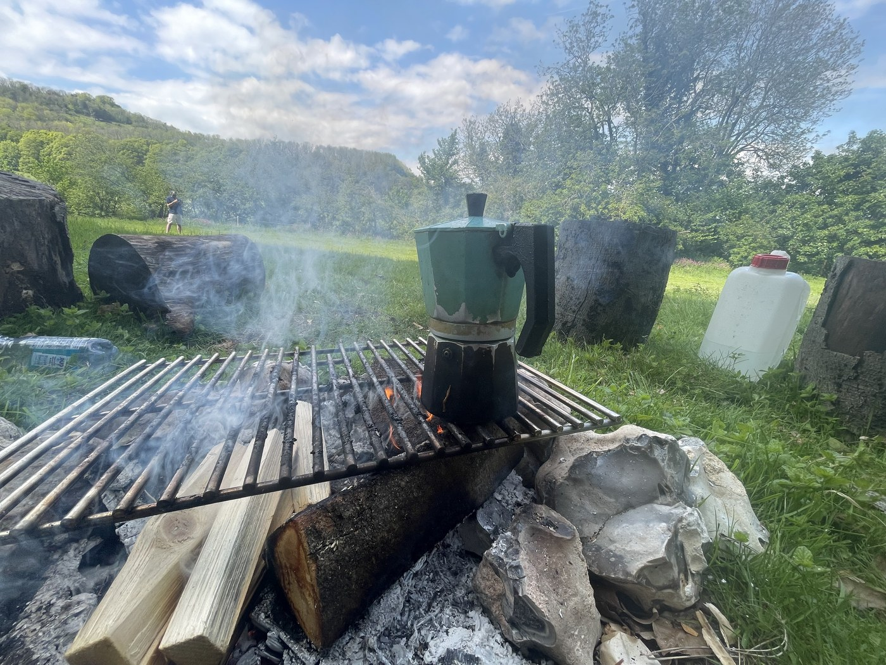

Business
Don't work with Dicks — and how to avoid it
March 2025
I'm Alastair Reid — most people call me Al. Thirty years making and shaping things. The last twelve, mostly people.
I'm a better listener than I am anything else. I work from coffee shops, Zoom calls, and when the problem is knotty enough, a farm in Sussex with a fire going. I have 4,400 records and counting.
